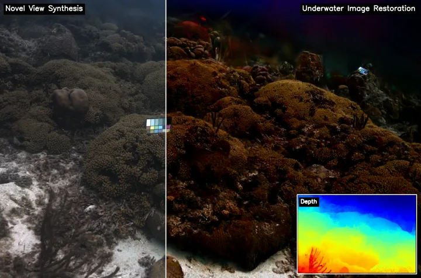

WaterClear-GS: Optical-Aware Gaussian Splatting for Underwater Reconstruction and Restoration
WaterClear-GS gives each 3D Gaussian parameters for light attenuation and backscatter. From one reconstruction, it can render a new underwater view in real time and estimate what the same view would look like without the water’s haze and color cast.